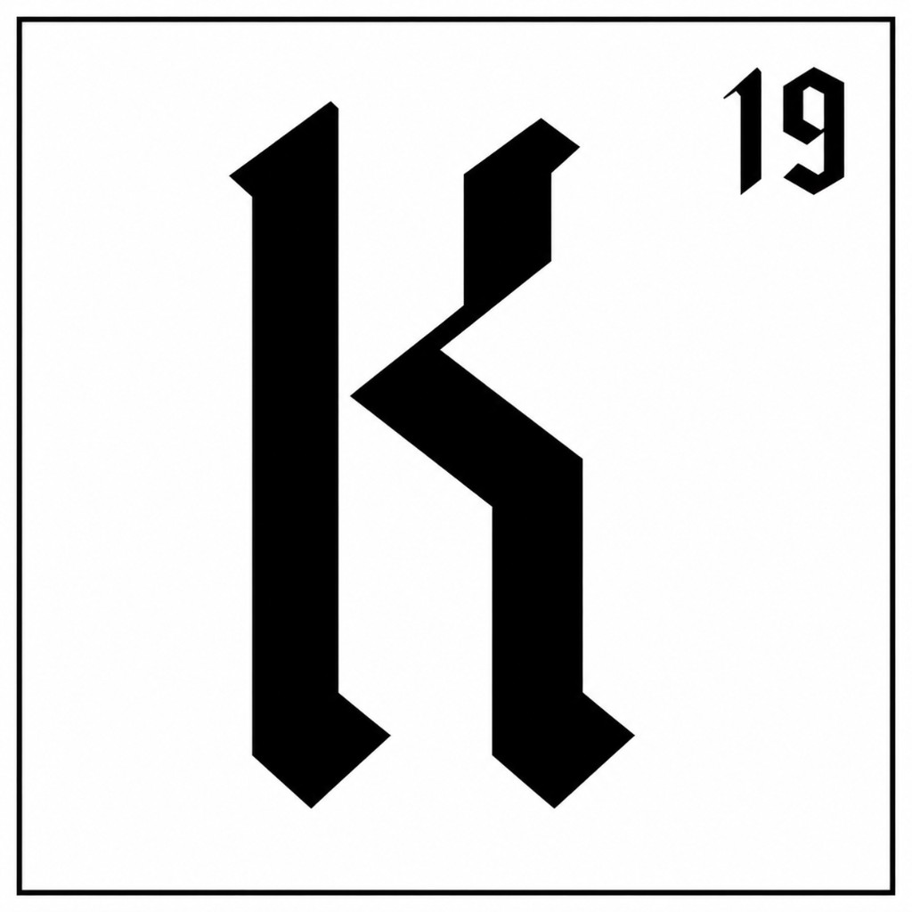
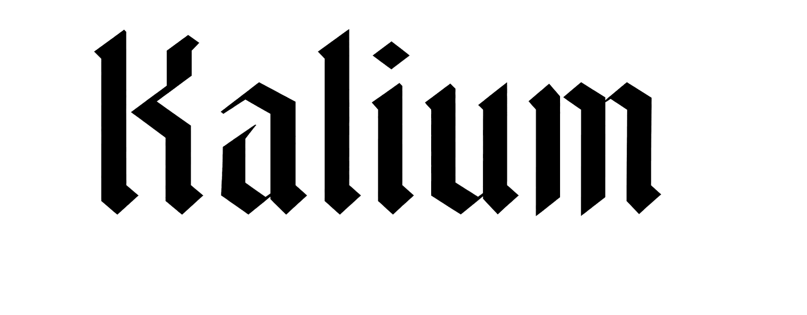

The Instrument
Capped returns. Surplus becomes public goods, on the founder’s terms.

Piloting / 2026Introducing

Equity that creates public goods alongside private returns.
↓The premise
Kalium invests on conventional terms, alongside conventional capital. Above an agreed cap, surplus returns are reinvested in the company to create public goods — chosen by the founder, built from what the company does best.
The structure is the argument
Rows are eras; columns move from principle to practice. Kalium, 19 — eighteen electrons rest in closed shells (2, 8, 8); the nineteenth stands alone in the outer shell, and giving it away is how the element bonds. Eighteen parts convention, one part radical.
“Nothing about the deal changes. Above an agreed cap, surplus returns become public goods, chosen by the founder alone.” — the position, in nineteen words.
Drawn from the foundational identity sessions, 2026. Kalium — symbol K — the nineteenth electron.
How it works
(2026)
Capped returns. Surplus becomes public goods, on the founder’s terms.
LP-first, co-investing alongside conventional capital — within an $8B platform.
Published as a public resource. Designed to be copied. Built to be standard.
From Loaded — the publication
Essays, mechanics, and conversations for people who already have it — hosted by the ones building an answer.
Wealth holders, founders, GPs